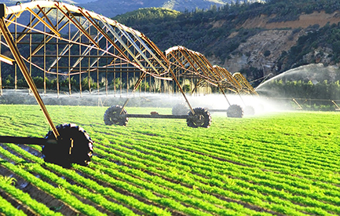
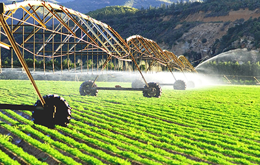

.png)
Desarrollado por el Instituto de Investigación Avanzada de navegación (Sede Teresopolis), fue creado de forma gratuita a todos los usuarios del sector agroindustrial, un canal de intercambio de información, que van desde los datos climáticos reales, semanal histórica todos los días hasta el artículos agricultura, cultivos etc.
En Pecuaria, cortes de venta o matrices, leche y derivados, maquinaria y equipo, que puede ser comercializado dentro de la aplicación.
Las bases del sistema en las ciudades de Sao Paulo, Río de Janeiro, Brasilia, Teresópolis, Petrópolis, Nova Friburgo.
Presentan, libre, tiempo, mide 24 horas del día, actualizado, de 10 a 10 minutos para el conocimiento de todos los sectores de logística agroindustriales.
El objetivo es dar seguridad al hombre de campo y ser un canal de información, intercambio, compra y venta en el sector agroindustrial.
Por lo tanto, nuestro objetivo es dar seguridad a la población rural y contribuir con información, ayudándole a alcanzar socios de negocios, alcanzando así un nivel de excelencia.
Además de los grupos de interés vendemos el sistema con más detalle en las ventas de artículos.
Esto surge de la necesidad del agricultor y ganadero del monitor elementos del tiempo todos los días, con el artículo y la agricultura ambiente concepto. Nuestros técnicos dan por lo tanto la mejor fecha de siembra, sobre la base de datos, tales como la temperatura, la precipitación, humedad, presión, viento, altura de las nubes, punto de rocío, la radiación - eventos meteorológicos en tiempo real y se actualiza cada 10 minutos.
También puede acceder a las imágenes y vídeos para acompañar cada etapa de la siembra o la ganadería, la formación de una historia que ayudará a mejor el agricultor de la productividad.
La herramienta también muestra la información sobre empresas, suplementos y tiendas de maquinaria agrícola, además de exponer las noticias del mercado agrícola.
Disponible para Android y iOS.
Aplicación desarrollada por el Instituto de Investigación Avanzada de navegación (Sede Teresopolis), fue creado de forma gratuita a todos los usuarios del sector agroindustrial, un canal de intercambio de información, que van desde los datos del clima real, con todos los días hasta la semana histórica artículos agricultura, cultivos, etc.
Adhesión al sistema.
Instalación del equipo meteorológico más sistema IPAN Apps de Brasil. Contrato 36 Meses después del valor de 1 Salario Mínimo Mensual
 

2017 IPAN AGROP